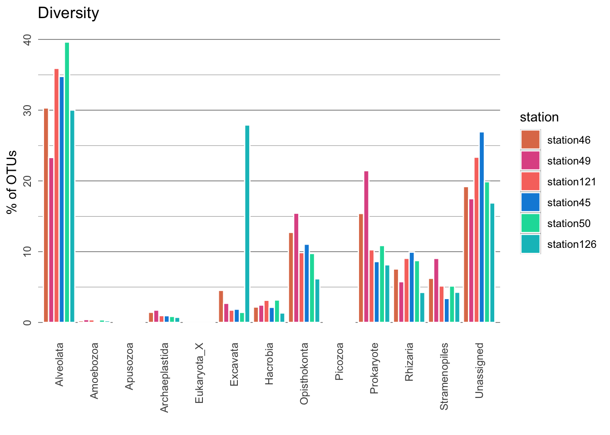
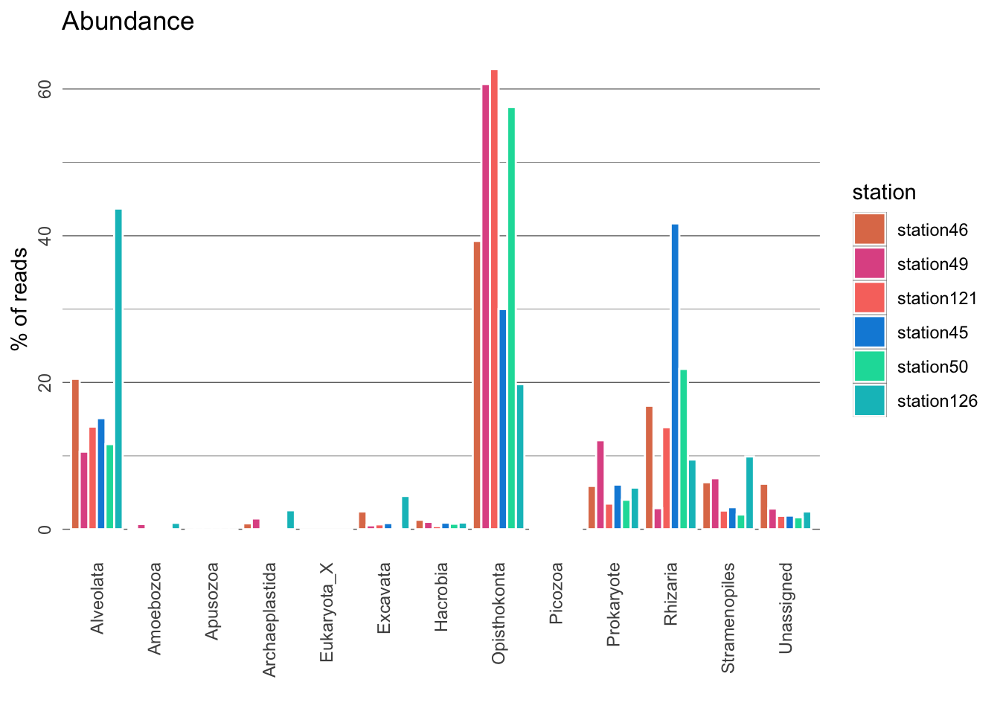
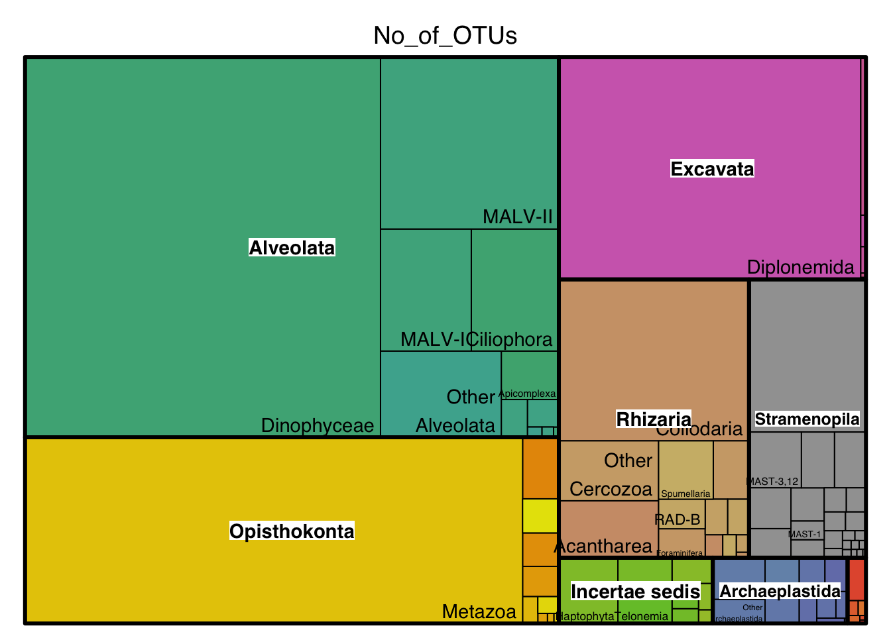
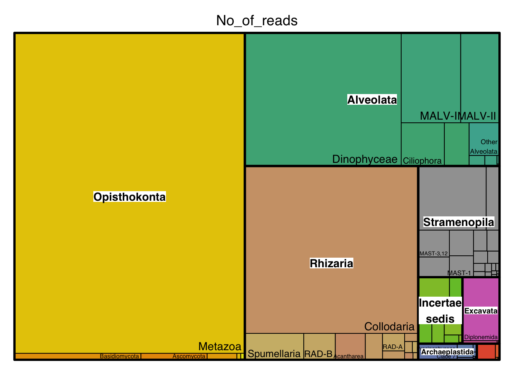
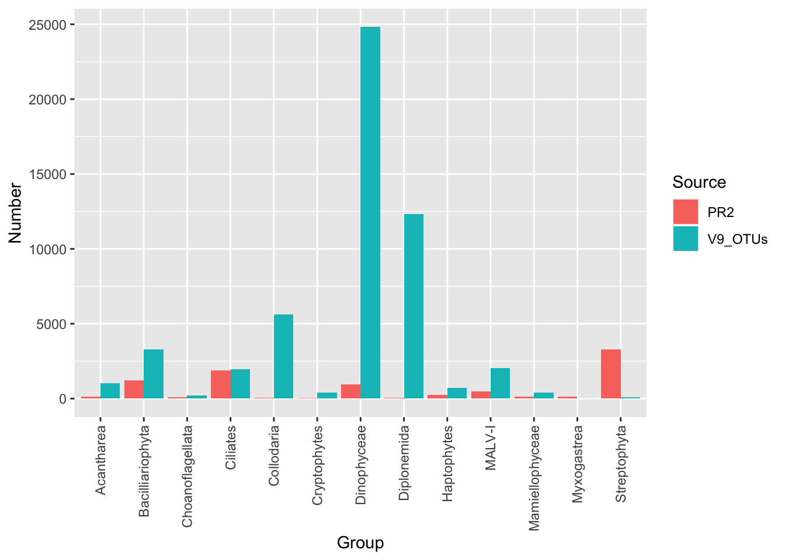
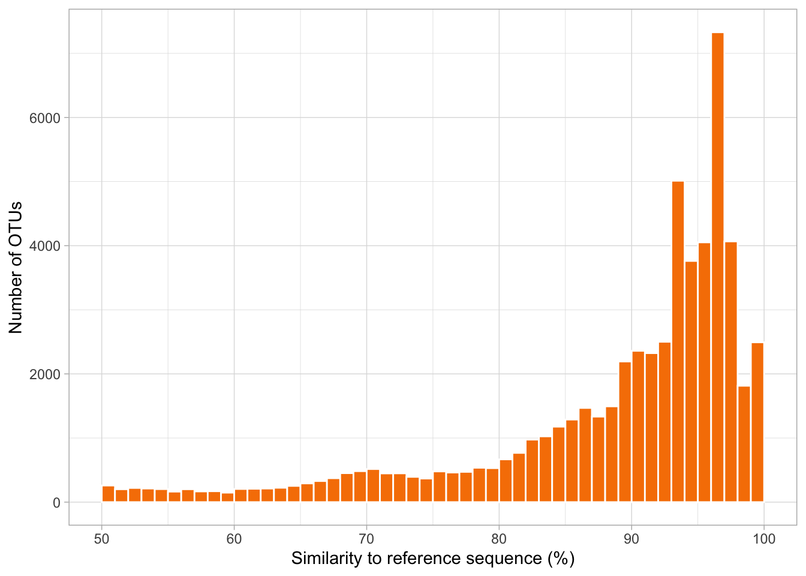

3 Exploring microbial diversity
3.1 Identifying OTUs
We will start with identifying all of the OTUs in our two marine environments (coral reef and open ocean), and assigning them taxonomy. This is done by searching the OTUs against a reference database. BLAST the sequences below against the GenBank database.
>otu_1485;613
gtcgctactaccgattgaacgttttagtgagacatttggactgggtcagtgtaggctttcatgcct acgttgtctccggaaagactttcaaacttgagcgtttagaggaagtaaaagtcgtaacaaggtttcc
>otu_58431;9
gtcgcacctaccgattggatgtttcgatgaggccctcggaccgtggcacgtcaccttgactggcaa cgcgctttgggaagttgtccaaatctcaacatctagaggaaggtgaagtcgtaacaaggtttcc
>otu_5604;24
gtcgctcctaccgattgagtgatccggtgaattacttggattgcagcagggctcagtgtgtgaact ttgctggagaaatgtcatgaaccttattacttagaggaaggagaagtcgtaacaaggtttct
Questions:
8. How long are the nucleotide sequences (metabarcodes) on average?
9. Considering only the top hit, identify the three OTUs to species or genus level. Which supergroup/major lineage do they belong to? Search them on Google images to bond with them a little.
10. What role do these three organisms carry out in the oceans? (Briefly read on Wikipedia/somewhere else).
11. In our fasta files, the fasta header describes two things, the unique OTU identifier (before the “;”), and the number of reads in that OTU (number after the “;”). Given that information, which organism is the abundant out of the three?
To identify all of the thousands of OTUs in our datasets, we will use the same approach as above but using automated methods. Here, instead of searching against GenBank which contains a lot of mislabelled sequences, we will use a curated database called PR2. This is a curated reference dataset specfically for the eukaryotic 18S gene. As in de Vargas et al. 2015 (the Tara Oceans paper), we will assign OTUs to a taxonomic lineage if they are at least 80% similar to a reference sequence in PR2. If they are less than 80% similar, they are considered “unassigned”.
Let’s have a quick look at the reference database, PR2, modified to include only the V9 region for the Tara Oceans data. As you can see, the fasta headers contain the taxonomy of the respective sequences.
## >AF272045 Eukaryota|Alveolata|Dinophyta|Dinophyceae|Gymnodiniales|36|Kareniaceae_12|Karlodinium_05|micrum
## gtcgctcctaccgattgagtgatccggtgaataattcggactgcagcagtgtttagttcctgaacgttgcagcggaaagtttagtgaaccttatcacttagaggaaggagaagtcgtaacaaggtttcc
## >AF272049 Eukaryota|Alveolata|Dinophyta|Dinophyceae|Gymnodiniales|39|Kareniaceae_26|Karlodinium_10|micrum
## gtcgctcctaccgattgagtgatccggtgaataattcggactgcagcagtgtttagttcctgaacgttgcagcggaaagtttagtgaaccttatcacttagaggaaggagaagtcgtaacaaggtttcc
## >AM494500 Eukaryota|Alveolata|Dinophyta|Dinophyceae|Gymnodiniales|38|Kareniaceae_16|Karlodinium_07|micrum
## gtcgctcctaccgattgagtgatccggtgaataattcggactgcagcagtgtttagttcctgaacgttgcagcggaaagtttagtgaaccttatcacttagaggaaggagaagtcgtaacaaggtttcc
## >AF272046 Eukaryota|Alveolata|Dinophyta|Dinophyceae|Gymnodiniales|35|Kareniaceae_04|Karlodinium_03|micrum
## gtcgctcctaccgattgagtgatccggtgaataattcggactgcagcagtgtttagttcctgaacgttgcagcggaaagtttagtgaaccttatcacttagaggaaggagaagtcgtaacaaggtttcc
## >AF272050 Eukaryota|Alveolata|Dinophyta|Dinophyceae|Gymnodiniales|48|Kareniaceae_39|Karlodinium_16|micrum
## gtcgctcctaccgattgagtgatccggtgaataattcggactgcagcagtgtttagttcctgaacgttgcagcggaaagtttagtgaaccttatcacttagaggaaggagaagtcgtaacaaggtttcc3.2 Marine microbial diversity
3.2.1 Dominant supergroups in the chosen stations
For simplicity, we have already searched our OTUs against PR2. Now let’s have a broad overview of the organisms are present in our samples! In the plots below, coral reef stations will be coloured in shades of pink/coral and open ocean stations in shades of blue.
What organisms are present in our marine samples?
##
## Attaching package: 'dplyr'## The following objects are masked from 'package:stats':
##
## filter, lag## The following objects are masked from 'package:base':
##
## intersect, setdiff, setequal, union# read in data
stations <- read.csv("data/tara.otus.taxonomy.tsv", header=F, sep = "\t")
colnames(stations) <- c("group", "no_of_OTUs", "no_of_reads", "station")
# normalize data by station
norm_stations <- stations %>%
group_by(station) %>%
mutate(perc_OTUs = (no_of_OTUs / sum(no_of_OTUs))*100) %>%
mutate(perc_reads = (no_of_reads / sum(no_of_reads))*100)
# make custom theme for graphs
cust_theme <- theme_dark() +
theme(axis.text.y = element_text(angle=90, hjust=0.5), axis.text.x = element_text(angle=90, vjust=0.5, hjust=1), strip.text.x = element_text(angle=180),
panel.grid.major.x = element_blank(), panel.grid.minor.x = element_blank(),
strip.placement = "outside",
panel.background = element_rect(fill = "white"),
strip.background =element_blank(),
panel.spacing = unit(0, "lines"),
axis.ticks = element_blank())
# order stations so they appear in the desired order
norm_stations$station <- factor(norm_stations$station, c("station46", "station49", "station121", "station45", "station50", "station126"))
# plot richness/diversity
ggplot(norm_stations, aes(x = group, y = perc_OTUs)) +
geom_bar(aes(fill = station), color="white", stat = "identity", position = "dodge") +
scale_fill_manual(values = c("station121" = "#F8766D", "station126" = "#00BFC4", "station45" = "#0B8CDB", "station46" = "#E07B58", "station49" = "#E05893", "station50" = "#0BDBA8")) +
xlab("") + ylab("% of OTUs") +
ggtitle("Diversity") +
cust_theme
# plot abundance
ggplot(norm_stations, aes(x = group, y = perc_reads)) +
geom_bar(aes(fill = station), color="white", stat = "identity", position = "dodge") +
scale_fill_manual(values = c("station121" = "#F8766D", "station126" = "#00BFC4", "station45" = "#0B8CDB", "station46" = "#E07B58", "station49" = "#E05893", "station50" = "#0BDBA8")) +
xlab("") + ylab("% of reads") +
ggtitle("Abundance") +
cust_theme
Questions:
12. The plots generated show relative species diversity and abundance. Why is it better to show relative values than absolute values?
13. A large proportion of OTUs could not be classified (“Unassigned”). What could they represent?
14. What is the most diverse lineage of organisms in each environment? Is it heterotrophic or photosynthetic?
15. What is the most abundant lineage of organisms in each environment? Is it heterotrophic or photosynthetic?
16. When estimating abundance of organisms, we assume that the number of reads is proportional to the number of respective organism; i.e. we assume that the species with the largest number of reads is the most abundant. Can you think of other factors that may affect the number of reads?
3.2.2 Dominant major lineages in global marine waters
Now let us take a closer look at the most dominant major lineages in the global ocean (i.e. data from all Tara Ocean stations; data obtained from the Tara Oceans Companion Website, Dataset W6).
In the treemaps generated below, each group is represented by a rectangle, and the area of each rectangle is proportional to its value. Hover and click for interactivity on the interactive treemap. Hovering over a group will also give its value :)
Most diverse lineages
# load necessary packages
library(treemap)
library(d3treeR)
# dataset
data <- read.csv("data/w6.all-tara.tsv", header=T, sep = "\t")
# basic treemap
p_diversity <- treemap(data,
index=c("Supergroup","Major_lineage"),
vSize="No_of_OTUs",
type="index",
palette = "Set2",
bg.labels=c("white"),
align.labels=list(
c("center", "center"),
c("right", "bottom")
)
) 
# make it interactive ("rootname" becomes the title of the plot):
inter_diversity <- d3tree2( p_diversity , rootname = "Hover and click groups for interactivity" )
inter_diversityQuestions:
17. List the three most diverse lineages in the global oceans (excluding Metazoa) as well as their ecological role in the oceans.
Most abundant lineages
# basic treemap
p_abund <- treemap(data,
index=c("Supergroup","Major_lineage"),
vSize="No_of_reads",
type="index",
palette = "Set2",
bg.labels=c("white"),
align.labels=list(
c("center", "center"),
c("right", "bottom")
)
) 
# make it interactive ("rootname" becomes the title of the plot):
inter_abund <- d3tree2( p_abund , rootname = "Hover and click groups for interactivity" )
inter_abundQuestions:
18. List the three most abundant lineages in the global oceans (excluding Metazoa) as well as their ecological role in the oceans.
3.2.3 Novel diversity
Before metabarcoding studies, our view of microbial diversity in the oceans was largely informed by describing morphological species that were cultured. The Tara Oceans expedition in particular helped change our view of planktonic diversity and discovered lots of novel diversity.
The plot below compares the number of reference sequences in PR2 and total Tara-Oceans V9 OTUs for a subset of groups. Note that reference sequences in PR2 are not derived from marine environments, but also include soils and freshwater organisms.
# Morphological species vs. Tara OTUs
data <- read.csv("data/pr2_otus.tsv", header=T, sep = "\t")
ggplot(data, aes(fill=Source, y=Number, x=Group)) +
geom_bar(position="dodge", stat="identity") +
theme(axis.text.x = element_text(angle = 90, vjust = 0.5, hjust=1))
Questions:
19. Why are the groups Myxogastrea and Streptophyta found relatively less in Tara Oceans data?.
20. In which groups was the most hidden diversity discovered? List three groups. Roughly how many folds was the diversity increase?
Finally, let’s investigate how similar Tara Oceans OTUs from the six chosen stations are to reference sequences in PR2.
data <- read.csv("data/similarity.tsv", header=T, sep = "\t")
ggplot(data, aes(x=perc_identity, fill=perc_identity)) +
geom_histogram(binwidth = 1, boundary = 0, closed = "left", color="white", fill=rgb(247,128,0, maxColorValue = 255)) +
theme_light() +
xlim(50,100) +
xlab("Similarity to reference sequence (%)") +
ylab("Number of OTUs")
echo 'The total number of OTUs at these six stations is:'
cat data/similarity.tsv | wc -l
echo 'The number of OTUs between 80-90% similar to the reference database is:'
cat data/similarity.tsv | awk '$2 < 90' | awk '$2 > 80' | wc -l
echo 'The number of OTUs less than 80% similar to the reference database is:'
cat data/similarity.tsv | awk '$2 < 80' | wc -l## The total number of OTUs at these six stations is:
## 57740
## The number of OTUs between 80-90% similar to the reference database is:
## 12311
## The number of OTUs less than 80% similar to the reference database is:
## 9631Questions:
21. Sequences divergent from references represent novel diversity! Indeed, sequences that are less than 80% similar to any reference, cannot even be assigned to any major lineage or supergroup. What percentage of sequences are between 80-90% similar to references, and what percentage are less than 80% similar?
These results are exciting because they indicate how much we still have to learn about the organisms that keep our oceanic ecosystems functioning!